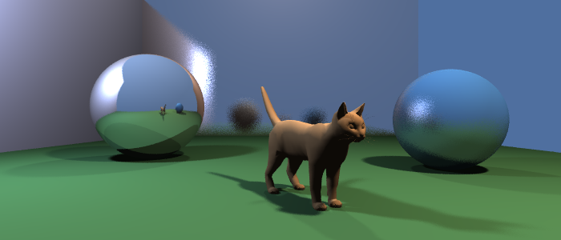
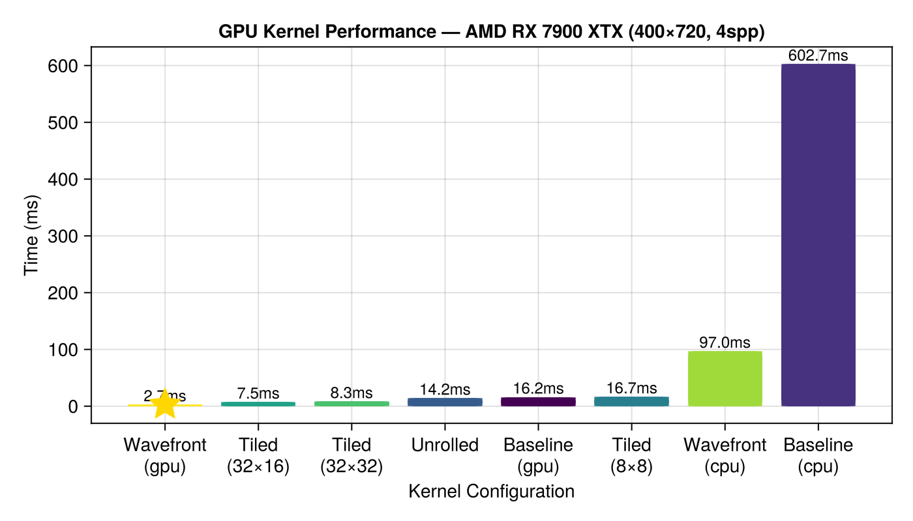
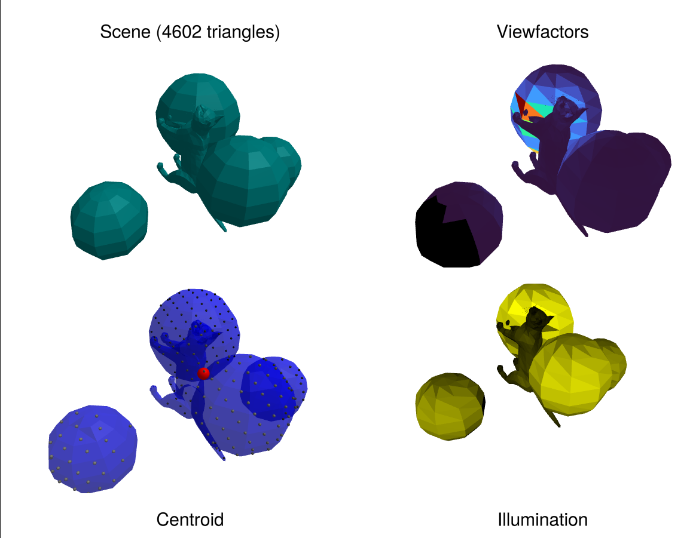

Raycore.jl
High-performance ray-triangle intersection engine with TLAS/BLAS acceleration for CPU and GPU.
Features
- Fast TLAS/BLAS acceleration for ray-triangle intersection
- CPU and GPU support via KernelAbstractions.jl
- MultiTypeSet: GPU-safe heterogeneous collections with compile-time type-stable dispatch for materials, textures, lights, etc.
- GPU TLAS:
Raycore.TLASis software, backend-agnostic (any KA backend). For hardware ray tracing on Vulkan, useLava.HWTLAS— a drop-inAbstractAccelimplemented viaVK_KHR_ray_tracing_pipeline. See Hardware Ray Tracing with Lava. - Analysis tools: centroid calculation, illumination analysis, view factors for radiosity
- Makie integration for visualization
Interactive Examples
Hit Tests & Basics
Learn the basics of ray-triangle intersection, TLAS construction, and visualization.

Ray Tracing Tutorial
Build a complete ray tracer from scratch with shadows, materials, reflections, and tone mapping.

GPU Ray Tracing Tutorial
Port the ray tracer to the GPU with KernelAbstractions.jl. Learn about kernel optimization, loop unrolling, tiling, and wavefront rendering.

Hardware RT Acceleration
Use dedicated GPU ray tracing hardware (RT cores / Ray Accelerators) for transparent BVH acceleration via Vulkan.
Hardware Ray Tracing with Lava
View Factors Analysis
Calculate view factors, illumination, and centroids for radiosity and thermal analysis.

Overview
Raycore.AbstractAccel — Type
AbstractAccelMutable acceleration structure for ray/geometry intersection queries.
Concrete implementations:
Raycore.TLAS— software BVH/TLAS, runs on any KernelAbstractions backend.Lava.HWTLAS— hardware ray tracing viaVK_KHR_ray_tracing_pipeline.
Mutation API
push!(accel, mesh, transform): add geometry, return aTLASHandle.delete!(accel, handle),update_transform!(accel, handle, transform),update_transforms!(accel, handle, transforms).
Lifecycle
sync!(accel)— sole owner ofaccel.static_tlas. Rebuilds in place where possible; reassigns when a buffer had to grow. No-op on a clean accel. Does NOT block the CPU on a GPU fence; backend-internal timeline tracking handles the "still in flight" case.Adapt.adapt(backend, accel) === accel.static_tlasbetweensync!s. Consumers re-readaccel.static_tlas(or callAdapt.adapt) per dispatch. Caching the adapted form across mutations is a contract violation.
Query
closest_hit(adapted, ray) -> (hit, tri, t, bary, instance_override)any_hit(adapted, ray) -> Boolworld_bound(accel),n_instances(accel),n_geometries(accel).
Flush
wait_for_gpu!(accel)— block CPU until all pending GPU work on this accel's queue has completed. Convenience for tear-down and benchmark isolation. Not part of the hot path.
Raycore.BLAS — Type
BLAS{NodeArray, TriArray}Bottom-Level Acceleration Structure - BVH over triangle geometry.
Type parameters allow CPU (Vector) or GPU (CuArray, ROCArray) storage.
Raycore.BLAS4 — Type
BLAS4{NodeArray, TriArray}Bottom-Level Acceleration Structure using BVH4 nodes.
Raycore.BLASDescriptor — Type
BLASDescriptorLightweight descriptor for a BLAS in flat-array layout. Instead of storing device pointers to per-BLAS arrays (which fail on Metal when stored in GPU buffers), this stores offsets into concatenated flat arrays.
Fields:
nodes_offset: 0-based offset into the flat allblasnodes arrayprimitives_offset: 0-based offset into the flat allblasprims arrayroot_aabb: Bounding box of the BLAS in local space
Raycore.BVHNode2 — Type
BVHNode2Compact BVH node for two-child binary trees. Stores AABBs for both children inline (BVH2IL layout from RadeonRays).
Fields:
aabb0_min,aabb0_max: Child 0 bounding box (or vertex data for leaves)aabb1_min,aabb1_max: Child 1 bounding box (or unused for leaves)child0: Child 0 index (INVALID_NODE for leaves)child1: Child 1 index (or primitive index for leaves)parent: Parent node index
Raycore.BVHNode4 — Type
BVHNode44-wide BVH node optimized for GPU traversal. Stores up to 4 children with their AABBs inline.
Memory layout: 128 bytes (one cache line on most GPUs)
- 4 child indices: 16 bytes
- 4 AABBs: 96 bytes (24 bytes each)
- Metadata: 16 bytes
Leaf nodes indicated by child_count == 0 and first primitive index in child0.
Raycore.CollisionResult — Type
CollisionResult{C, B}Result of collision detection, containing contact pairs and a reusable cache buffer.
Fields:
contacts: Vector ofContactPair(or similar) on the compute backendnum_contacts: Number of valid contactscache: Internal buffer for reuse across frames viacachekeyword
Raycore.ContactPair — Type
ContactPairA pair of contacting instances in a TLAS, identified by their 1-based instance indices.
Raycore.FastClosure — Type
FastClosure{F, Args<:Tuple}A callable wrapper that validates a function and arguments are GPU-safe:
- Function
fhas no captured variables (noCore.Boxfields) - Arguments don't exceed compiler limits (tuple length, type depth)
When called, appends stored args to the call: fc(x) == fc.f(x, fc.args...)
This is used internally by for_unrolled, map_unrolled, and reduce_unrolled.
Raycore.InstanceDescriptor — Type
InstanceDescriptorDescribes an instance of a bottom-level BVH in world space.
Fields:
blas_index: Index into BLAS arrayinstance_id: Scene-binding slot for this instance.0means "inherit from the triangle's per-face metadata"; any nonzero value is forwarded verbatim byclosest_hit/any_hitas the 5th return value. Hikari uses it as amedium_interface_idxoverride so N instances of one BLAS can have distinct materials / media / emission without duplicating the BLAS geometry. Matches Vulkan'sgl_InstanceCustomIndexEXT.transform: Local-to-world transform (Vulkan row-major 3×4,Mat3x4f)inv_transform: World-to-local transform (Vulkan row-major 3×4,Mat3x4f)flags: Instance flags (reserved for future use)
Raycore.MultiTypeSet — Type
MultiTypeSet(backend)Mutable heterogeneous vector that builds GPU-ready structures on each push!. Takes a KernelAbstractions backend at construction.
Example
backend = OpenCL.OpenCLBackend()
dhv = MultiTypeSet(backend)
texture = rand(Float32, 20, 20)
idx1 = push!(dhv, MatteMaterial(texture))
idx2 = push!(dhv, GlassMaterial(1.5f0))
# Access the GPU-ready StaticMultiTypeSet directly
gpu_smv = dhv.static # Always up-to-date, no adapt neededPush converts arrays to TextureRefs and stores texture data as GPU arrays. The static field is rebuilt on each push to stay up-to-date.
Raycore.RTHitResult — Type
RTHitResultRay hit output from hardware RT dispatch. 32 bytes.
instance_custom_index— value ofgl_InstanceCustomIndexEXTat the hit. Under the current semantics this carries theInstanceDescriptor.instance_id(the interface-override slot).0means "inherit from triangle metadata".instance_id— value ofgl_InstanceIDat the hit (0-based instance array position). Used by the caller to look up per-instance data such as the BLAS triangle offset.
Raycore.RTRay — Type
RTRayRay input for hardware RT dispatch. 32 bytes, matches Vulkan/Metal layout.
Raycore.SetKey — Type
SetKeyIndex into a heterogeneous vector, encoding both which type slot (1-based) and the index within that type's array.
type_idx: Which tuple slot (1-based), 0 = invalid/constant sentinelvec_idx: 1-based index within the vector at that slot
Raycore.StaticMultiTypeSet — Type
StaticMultiTypeSet{Data, Textures}Immutable heterogeneous collection with separate texture storage.
data: Tuple of GPU vectors for materials/objectstextures: Tuple of GPU vectors containing isbits device pointers
Raycore.StaticTLAS — Type
StaticTLAS{NodeArray, InstArray, BLASNodeArray, BLASPrimArray, DescArray}Immutable Top-Level Acceleration Structure for GPU kernel traversal. This is what Adapt.adapt_structure returns from a TLAS.
Uses flat arrays with offset-based indexing instead of per-BLAS pointer arrays. This avoids the Metal issue where device pointers stored in GPU buffers cannot be reliably dereferenced by kernels.
The struct is immutable and contains only the arrays needed for ray traversal. No management state (dictionaries, free lists, etc.) - those stay on CPU in TLAS.
Raycore.TLAS — Type
TLAS{Backend}Mutable Top-Level Acceleration Structure with direct GPU arrays.
GPU-first design: instances are appended directly to GPU array using efficient GPU append. CPU-side dictionary provides O(1) handle lookups.
Adapted-form invariant (READ THIS)
sync!(tlas) is the single owner of the GPU-adapted form. It rebuilds as efficiently as possible — in place via resize!/copyto! where the backing buffer can be reused, freshly allocated only when a buffer grew — and stores the result in tlas.static_tlas. sync! MAY reassign tlas.static_tlas = new_static_tlas when a buffer was reallocated.
Every consumer that hands an accel to a raytracing kernel MUST go through tlas.static_tlas or Adapt.adapt(backend, tlas) (which reads / refreshes tlas.static_tlas) per dispatch. Those are cheap; sync! did the heavy lifting. NEVER cache the StaticTLAS returned by adapt across mutations — after a reshape-driven reallocation the cached snapshot holds a stale device pointer.
The same contract applies to HWTLAS — see its docstring.
Type Parameters
Backend: KernelAbstractions backend (CPU(), LavaBackend(), CUDABackend(), etc.)
Fields
backend: KernelAbstractions backend for kernelsnodes: BVH nodes array (on backend, grown in place on sync! where possible)instances: Instance descriptors array (GPU array, direct append)blas_array: BLAS objects array (GPU array with isbits pointers)root_aabb: World-space bounding boxhandle_to_range: Handle -> range in instances array (CPU-side)deleted_handles: Handles deleted but not yet compacted (CPU-side)blas_storage: Per-BLAS backing arrays; keeps GPU buffers alive for isbits pointersstatic_tlas: GPU-adapted form, owned bysync!. Consumers read this, do not cache it across mutations.dirty: Whether BVH topology needs rebuildtransforms_dirty: Whether instance transforms changed and the TLAS needs refitrevision: Monotonic counter bumped by every mutation that reshapes GPU-visible arrays. Intended purely as a diagnostic signal — consumers that go throughtlas.static_tlasdon't need to check it.
Usage
tlas = TLAS(CPU())
h1 = push!(tlas, mesh)
h2 = push!(tlas, mesh, transforms)
update_transform!(tlas, h2, new_transform)
delete!(tlas, h1)
sync!(tlas) # Rebuild / refresh tlas.static_tlas
static = adapt(backend, tlas) # Reads tlas.static_tlas — cheap, call per dispatchRaycore.TLAS — Method
TLAS(meshes::AbstractVector{<:GeometryBasics.Mesh}; backend=KA.CPU()) -> (TLAS, Vector{TLASHandle})Create a mutable TLAS from a vector of GB.Mesh objects. Each mesh becomes a BLAS with a single instance at identity transform.
Returns the mutable TLAS and a vector of TLASHandles for later reference.
Examples
tlas, handles = TLAS([floor_mesh, wall_mesh, sphere_mesh])Raycore.TLAS — Method
TLAS(backend) -> TLASCreate an empty TLAS for the given backend. Use push! to add geometries/instances, then sync! to rebuild the BVH. Adapt.adapt_structure returns a StaticTLAS for kernel traversal.
Example
tlas = TLAS(OpenCLBackend())
h1 = push!(tlas, geometry)
h2 = push!(tlas, Instance(geometry, transforms))
sync!(tlas) # Rebuild BVH on backend
static = adapt(backend, tlas) # StaticTLAS with isbits pointers for kernelsRaycore.TLAS — Method
TLAS(primitives::AbstractVector, metadata_fn::Function; backend=KA.CPU())Universal TLAS constructor. Each primitive (GB.Mesh or AbstractGeometry) becomes a BLAS with a single instance.
Each mesh is automatically treated as an instance at identity transform. Perfect for scenes where you just have different meshes and want automatic instancing.
GPU-first: Specify backend to build all BLASes directly on GPU.
Example:
geometries = [cat_mesh, floor, sphere]
tlas = TLAS(geometries, (mesh_idx, tri_idx) -> UInt32(mesh_idx))
# GPU-first:
tlas = TLAS(geometries, metadata_fn; backend=OpenCLBackend())Raycore.TLAS4 — Type
TLAS4{NodeArray, InstArray, BLASArray}Top-Level Acceleration Structure using BVH4 nodes.
Raycore.TLASHandle — Type
TLASHandleStable handle for referencing instances in a TLAS. Simple unique ID for O(1) lookup in handletorange dictionary.
Raycore.any_hit — Method
any_hit(tlas::TLAS, ray::AbstractRay) -> (hit, primitive, distance, barycentric, instance_idx)Traverse two-level BVH to find ANY ray intersection (returns on first hit). Faster than closest_hit when only occlusion testing is needed.
Matches HLSL TraceRays with ANY_HIT defined.
Raycore.any_hit4 — Method
any_hit4(blas::BLAS4, ray::AbstractRay) -> (hit, primitive, distance, barycentric)Traverse BVH4 to find any intersection (early exit).
Raycore.build_blas — Method
build_blas(primitives) -> BLASBuild a Bottom-Level Acceleration Structure using Linear BVH (LBVH).
Uses KernelAbstractions for automatic CPU/GPU execution based on input array type.
Algorithm:
- Compute scene AABB
- Calculate Morton codes in parallel (GPU kernel)
- Sort primitives by Morton code
- Build binary radix tree in parallel (GPU kernel)
- Compute AABBs bottom-up
Based on Karras 2012 "Maximizing Parallelism in the Construction of BVHs, Octrees, and k-d Trees"
Arguments
primitives: Vector or GPU array of Triangle objects (array type determines backend)
Example
# CPU execution
blas_cpu = build_blas(triangles) # Vector{Triangle}
# GPU execution (CUDA)
using CUDA
gpu_triangles = CuArray(triangles)
blas_gpu = build_blas(gpu_triangles) # CuArray{Triangle}Raycore.build_blas4 — Method
build_blas4(primitives) -> BLAS4Build a BLAS using BVH4 nodes for faster traversal.
- Build standard LBVH (BVH2) using existing kernels
- Collapse BVH2 -> BVH4
Raycore.build_tlas — Method
build_tlas(blas_array::AbstractVector{BLAS}, instances::AbstractVector{InstanceDescriptor}) -> StaticTLASBuild a Top-Level Acceleration Structure over instances. Uses LBVH over transformed instance AABBs.
Returns a StaticTLAS with flat BLAS arrays suitable for ray traversal. Uses KernelAbstractions for automatic CPU/GPU execution based on input array type.
Raycore.build_topology_for_node — Method
Build topology for one internal node. Regular Julia function for testability.
Raycore.build_triangle — Method
build_triangle(vertices, normals, uvs, indices, face_idx, metadata)Build a Triangle from decomposed mesh arrays at the given face index.
Raycore.calculate_morton_code_for_prim — Method
Calculate Morton code for a single primitive. This is a regular Julia function, callable from CPU or GPU.
Raycore.calculate_tlas_morton_code — Method
Calculate Morton code for a single instance centroid.
Raycore.closest_hit — Method
closest_hit(tlas::TLAS, ray::AbstractRay) -> (hit, primitive, distance, barycentric, instance_idx)Traverse two-level BVH to find closest ray intersection.
instance_idx is the 1-based position in tlas.instances (or UInt32(0) on miss). Dereferencing tlas.instances[instance_idx] yields the full InstanceDescriptor — from which the caller can read the transforms, the interface-override instance_id, or anything else. This keeps a single source of truth (the TLAS instance array) rather than duplicating a pre-extracted sub-field.
Algorithm:
- Traverse TLAS to find candidate instances
- Transform ray to local space
- Traverse BLAS for geometry intersection
- Transform back to world space
- Return closest hit across all instances
Raycore.closest_hit4 — Method
closest_hit4(blas::BLAS4, ray::AbstractRay) -> (hit, primitive, distance, barycentric)Traverse BVH4 to find closest intersection.
Raycore.collide_instances — Method
collide_instances(tlas::TLAS; cache=nothing) -> CollisionResultFind all pairs of instances whose world-space AABBs overlap.
This is a broad-phase test — it identifies which instances might be in contact based on their bounding boxes. For exact triangle-triangle contact, use collide.
Returns a CollisionResult with ContactPairs (1-indexed instance IDs).
Example
tlas = TLAS(backend)
push!(tlas, mesh_a, transform_a)
push!(tlas, mesh_b, transform_b)
sync!(tlas)
result = collide_instances(tlas)
for i in 1:result.num_contacts
pair = result.contacts[i]
println("Instance $(pair.instance_a) overlaps instance $(pair.instance_b)")
end
# Reuse buffers for next frame:
result2 = collide_instances(tlas; cache=result.cache)Raycore.collide_instances_any — Method
collide_instances_any(tlas::TLAS, handle_a::TLASHandle, handle_b::TLASHandle) -> BoolTest whether two specific instance groups overlap (broad-phase AABB test). Fast early-exit — returns true on first overlap found.
Raycore.copyto_texture! — Method
copyto_texture!(dhv, ref, data)Write data into the GPU texture addressed by ref. Same-size is a plain copyto! (device pointer unchanged — no other state needs updating). Size mismatch goes through Base.resize!(::LavaArray) which is capacity-aware: the VkBuffer is only re-allocated on genuine growth beyond current capacity, and the old buffer is retired via the deferred-free path (bq.deferred_frees gated on the batch timeline — safe w.r.t. in-flight GPU work without any CPU-side synchronize).
If the device pointer actually moved (pool-alloc returned a fresh buffer), the one affected slot of static.textures[AT_slot] is updated via a single scalar setindex! — no re-adapt of the whole table, no per-frame leak.
Raycore.create_leaf_for_prim — Method
Create leaf node for one primitive. Regular Julia function.
Raycore.create_tlas_leaf_for_instance — Method
Create TLAS leaf node for one instance (stores world-space AABB, not triangle vertices).
Raycore.empty_triangle — Method
empty_triangle(::Type{Triangle{TMeta}}) -> Triangle{TMeta}Zero-initialized Triangle suitable as a no-hit sentinel. All vertex, normal, tangent, and uv components are 0; metadata is field-wise zero-constructed (works for any POD struct whose primitive fields have zero(T) defined).
Takes the full Triangle type (not just the metadata type) so callers can write empty_triangle(eltype(triangles)) directly.
Raycore.for_unrolled — Method
for_unrolled(f, tuple, args...)Iterate over tuple at compile-time, calling f(element, args...) for each element. No return value (use for side effects).
The function f must not capture any variables - pass all data as args instead.
Example
lights = (sun_light, point_light, spot_light)
total = Ref(RGBSpectrum(0f0))
# Bad - captures `total` and `ray`:
for light in lights
total[] += le(light, ray) # Boxing on GPU!
end
# Good - pass as arguments:
for_unrolled(add_light!, lights, total, ray)
# Where: add_light!(light, total, ray) = total[] += le(light, ray)Raycore.for_unrolled — Method
for_unrolled(f, ::Val{N}, args...)Iterate from 1 to N at compile-time, calling f(i, args...) for each index.
Raycore.free! — Method
free!(x)Trigger the registered finalizer on x to release GPU memory. Safe to call on any object — no-op if no finalizer is registered.
Raycore.free! — Method
free!(set::MultiTypeSet)Release GPU memory held by the MultiTypeSet — the shadow-owned texture arrays plus the static material/texture slot buffers. Does not synchronize.
Precondition (caller's responsibility): the GPU must be idle for set.backend before this is called. MultiTypeSet.texture_gpu_arrays is a shadow-ownership site: the only references from GPU work are raw BDAs in arg buffers, so nothing inside free! can prove it's safe to finalize — the caller establishes that, typically by calling sync! on the enclosing accel / scene (which synchronizes its backend) or by returning from a colorbuffer that completed with device_wait_idle.
Raycore.free! — Method
free!(tlas::TLAS)Release all GPU memory held by tlas. Does not synchronize.
Precondition (caller's responsibility): the GPU must be idle for tlas.backend before this is called — either because the caller just returned from sync!(tlas) / Hikari.sync!(scene), from a colorbuffer that issued its own device_wait_idle, or because the caller has otherwise issued KA.synchronize(tlas.backend).
Calling free! while dispatches are still in flight through a LavaArray / VkAccelerationStructureKHR BDA captured in an arg buffer is a use-after-free.
Raycore.get_child4 — Method
Get child index by position (0-3).
Raycore.get_child_aabb4 — Method
Get child AABB by position (1-4).
Raycore.get_instance — Function
get_instance(tlas::TLAS, handle::TLASHandle) -> InstanceDescriptor
get_instance(tlas::TLAS, handle::TLASHandle, instance_idx::Integer) -> InstanceDescriptorRetrieve the InstanceDescriptor for a handle. If the handle has multiple instances (created with multiple transforms), use instance_idx to specify which one (1-based).
Note: Reads from GPU array, may involve a device-to-host copy.
Raycore.get_instances — Method
get_instances(tlas::TLAS, handle::TLASHandle) -> Vector{InstanceDescriptor}Retrieve all InstanceDescriptors for a handle (for handles with multiple transforms).
Note: Reads from GPU array, involves a device-to-host copy.
Raycore.getindex_unrolled — Method
getindex_unrolled(f, tuple, idx::Int32, args...) -> resultSelect element at runtime index idx from tuple and apply f(element, args...). Uses unrolled if-branches for GPU compatibility - no dynamic dispatch.
The index is 1-based. If idx is out of bounds, returns f(tuple[1], args...) as fallback.
Example
lights = (sun_light, point_light, env_light)
light_idx = Int32(2)
# Sample from the selected light
sample = getindex_unrolled(sample_light, lights, light_idx, point, lambda, u)
# Equivalent to: sample_light(point_light, point, lambda, u)Raycore.instance_buffer — Function
instance_buffer(tlas, handle::TLASHandle)Return the underlying GPU instance buffer (a Lava.LavaArray{LavaInstanceRecord, 1}) that the named batch is using. The caller can write into this buffer (e.g., via a compute kernel) and then call refit_tlas!(tlas) to commit the changes.
Errors loudly if the handle does not refer to an instance batch (e.g., it refers to a per-mesh push! instance, which has no GPU instance buffer).
Raycore.is_degenerate_face — Method
is_degenerate_face(vertices, indices, face_idx)Check if a triangle face is degenerate (zero area) without constructing a full Triangle.
Raycore.is_interior4 — Method
Check if node is interior.
Raycore.is_leaf4 — Method
Check if node is a leaf.
Raycore.is_valid — Method
is_valid(tlas::TLAS, handle::TLASHandle) -> BoolCheck if a handle is still valid (not deleted). O(1) operation.
Raycore.map_unrolled — Method
map_unrolled(f, tuple, args...) -> TupleTransform each element of tuple at compile-time, returning a new tuple. Calls f(element, args...) for each element.
Example
lights = (sun_light, point_light)
contributions = map_unrolled(compute_light, lights, hit_point, normal)
# Returns: (compute_light(sun_light, hit_point, normal),
# compute_light(point_light, hit_point, normal))Raycore.n_geometries — Method
n_geometries(tlas::TraversableTLAS)Return number of unique BLAS geometries in the TLAS.
Raycore.n_instances — Method
n_instances(tlas::TraversableTLAS)Return total number of live instance descriptors in the TLAS.
For a TLAS, instances delete!d but not yet compacted by sync! are excluded; the count tracks what the next sync! will publish, not the backing buffer length. StaticTLAS has no pending state, so it returns length(tlas.instances) directly.
Raycore.n_instances — Method
n_instances(tlas::TLAS, handle::TLASHandle) -> IntGet the number of instances referenced by a handle.
Raycore.n_total_instances — Method
n_total_instances(tlas::TLAS) -> IntGet the total number of active instances in the TLAS.
Raycore.reduce_unrolled — Method
reduce_unrolled(f, tuple, init, args...) -> resultReduce tuple at compile-time using f(accumulator, element, args...).
Example
lights = (sun_light, point_light, env_light)
# Compute total light contribution
total = reduce_unrolled(add_light_contribution, lights, RGBSpectrum(0f0), ray, hit_point)
# Where: add_light_contribution(acc, light, ray, hp) = acc + compute_li(light, ray, hp)Raycore.refit_node_aabb — Method
Refit AABB for one internal node from its children.
Raycore.reflect — Method
Reflect wo about n.
Raycore.set_parents_for_node — Method
Set parent pointers for one node's children. Regular Julia function.
Raycore.similar_soa — Method
similar_soa(template_array, T::Type, num_elements) -> NamedTupleCreate a Structure of Arrays (SoA) layout for type T with num_elements entries. Uses template_array to determine the array type (Array, ROCArray, etc.).
Raycore.sum_unrolled — Method
sum_unrolled(f, tuple, args...) -> resultSum f(element, args...) over all elements of tuple.
Example
lights = (sun_light, point_light)
total = sum_unrolled(le, lights, ray)
# Computes: le(sun_light, ray) + le(point_light, ray)Raycore.sync! — Method
sync!(tlas::TLAS) -> TLASRebuild the BVH structure if dirty, then wait for the GPU to finish all work currently queued on tlas.backend (via KA.synchronize). No-op if already up-to-date AND no work is pending.
sync! is the single owner of tlas.static_tlas. It rebuilds in place (resize!/copyto! on the same backing buffer) wherever possible so that a StaticTLAS returned by an earlier Adapt.adapt(backend, tlas) still sees the new geometry, and reallocates + reassigns tlas.static_tlas when a buffer needed to grow.
After sync!(tlas) returns:
- The TLAS reflects all prior
push!/delete!calls. tlas.static_tlasis the fresh adapted form.- The GPU is idle for
tlas.backend. - Any resource that is no longer reachable through the (new) accel is safe to release synchronously: its
VkAccelerationStructureKHR/ BDA captures in in-flight work have drained.
Invariants for callers:
update!/push!/delete!on the TLAS do NOT wait and do NOT perform cleanup; they mark state dirty and return immediately. Callsync!to establish a safe boundary before freeing transitively- owned resources.- Consumers of the adapted form read
tlas.static_tlas(or callAdapt.adapt(backend, tlas)) per dispatch. They MUST NOT cache the returnedStaticTLASacross mutations — after a reshape-driven reassign the cached snapshot holds a stale device pointer.
Raycore.update! — Method
update!(dhv::MultiTypeSet, key::SetKey, new_item)Update an existing item in the set. The new item is walked against the stored form via update_item: existing TextureRef slots are reused (the new array data is copied into the existing GPU buffer, reallocating on size mismatch), const-Texture fields are unwrapped to their scalar values, and other fields fall through as plain value replacement.
There is deliberately no maybe_convert_field/store_texture call on this path — that would allocate a new GPU slot per update and leak hundreds of MB per frame for plots with per-vertex color textures.
Raycore.update! — Method
update!(tlas::TLAS, handle::TLASHandle, new_geometry)Replace the geometry (BLAS) for a handle. All instances sharing this BLAS get updated.
Raycore.update_item — Method
update_item(dhv::MultiTypeSet, old, new)Compute the updated representation of old after applying new's data. Reuses existing TextureRef slots (copying new's arrays into them rather than allocating fresh GPU buffers). Extended by backend / material packages (e.g. Hikari) with overloads for their wrapper types — notably Texture (unwraps const, routes array data to copyto_texture!) and VertexColorTexture.
Raycore.update_particle_materials_kernel! — Method
GPU kernel: Batch update materials based on particle velocities.
Updates material colors using a heat-map based on velocity magnitude. Also updates metallic/roughness with per-particle noise variation.
Raycore.update_tlas_leaf_aabbs_kernel! — Method
GPU kernel: Update TLAS leaf node AABBs from instance transforms.
After transforms are updated, this kernel recomputes world-space AABBs for all leaf nodes. Must be called before refittlasaabbs_kernel!.
NOTE: Leaf nodes are Morton-sorted, so we must use the stored instance index (child1) to look up the correct instance.
Raycore.update_transform! — Method
update_transform!(tlas::TLAS, handle::TLASHandle, transform)Update the transform of a single-instance handle directly on GPU. For handles with multiple instances, use update_transforms!.
transform may be a Mat4f (homogeneous 4×4) or the canonical Vulkan row-major 3×4 (Mat3x4f); the Mat4f form is converted internally via mat4_to_mat3x4. After calling this, use refit_tlas! to update the BVH AABBs.
Raycore.update_transforms! — Method
update_transforms!(tlas::TLAS, handle::TLASHandle, transforms)Update all instances' transforms in a group directly on GPU. Length must match the number of instances in the handle.
Transforms may be Mat4f or the canonical Vulkan row-major 3×4 (Mat3x4f); Mat4f arrays are converted element-wise via mat4_to_mat3x4. The array can be CPU or GPU — it'll be adapted to the TLAS backend. After calling this, use refit_tlas! to update the BVH AABBs.
Raycore.wait_for_gpu! — Method
wait_for_gpu!(accel::AbstractAccel)Block the CPU until the GPU has completed all prior work that could be reading accel or its adapted form. Default implementation calls KA.synchronize on accel.backend. Concrete types that carry their own queue (e.g. Lava.HWTLAS) override this to wait on the specific timeline.
Convenience only. The per-dispatch hot path does NOT call this; see sync!.
Raycore.with_index — Method
with_index(f, smv::StaticMultiTypeSet, idx::SetKey, args...)Execute function f with the element at index idx, passing additional args. The function is called as f(element, args...) where element has a concrete type.
Uses a single if-elseif-else chain for SPIR-V structured control flow compatibility. The function f must not capture variables - pass all data as args.
Raycore.world_bound — Method
Get world-space AABB of a BLAS.
Raycore.world_bound — Method
Get world-space AABB of a TLAS.
Raycore.@get — Macro
@get field1, field2, ... = soa[idx]Macro to extract multiple fields from a Structure of Arrays (SoA) at index idx.
Example
ray_queue = (ray=[r1, r2, r3], pixel_x=[1, 2, 3], pixel_y=[4, 5, 6])
@get ray, pixel_x, pixel_y = ray_queue[2]
# Expands to:
# ray = ray_queue.ray[2]
# pixel_x = ray_queue.pixel_x[2]
# pixel_y = ray_queue.pixel_y[2]Raycore.@set — Macro
@set soa[idx] = (field1=val1, field2=val2, ...)Macro to set multiple fields in a Structure of Arrays (SoA) at index idx. Expects named tuple syntax on the right side.
Example
ray_queue = (ray=Vector{Ray}(undef, 10), pixel_x=zeros(Int32, 10))
@set ray_queue[1] = (ray=my_ray, pixel_x=Int32(5))
# Expands to:
# ray_queue.ray[1] = my_ray
# ray_queue.pixel_x[1] = Int32(5)Private Functions
Raycore.TOP_LEVEL_SENTINEL — Constant
Sentinel value to mark top-level to bottom-level transitions.
Raycore.BLASArrays — Type
BLASArraysPer-BLAS backing GPU arrays. Field ownership transitively keeps the nodes / primitives buffers alive while the TLAS holds them, so the isbits device pointers stored in blas_array (and the flat arrays used by StaticTLAS) remain valid.
primitives is left at the bare AbstractVector bound rather than AbstractVector{<:Triangle} because differently-parameterized Triangle{TMetadata} subtypes need to coexist across BLASes; the tighter bound forces a UnionAll that doesn't help dispatch.
Raycore.BVH4Leaf — Type
BVH4LeafLeaf node that stores triangle vertices directly (like BVH2IL format). For BVH4, we keep triangles separate and reference by index.
Raycore.CollapseTask — Type
CollapseTaskWork item for the BVH2 -> BVH4 collapse pass.
Adapt.adapt_structure — Method
Adapt.adapt_structure(to, tlas::StaticTLAS) -> StaticTLASAdapt StaticTLAS arrays. If already isbits, returns as-is. Otherwise adapts each array (CLArray → CLDeviceVector).
Note: StaticTLAS should come from adapting a mutable TLAS, where BLASes already have isbits device pointers. Use TLAS(items) to create a mutable TLAS that properly manages GPU array lifetimes.
Adapt.adapt_structure — Method
Adapt.adapt_structure(to, tlas::TLAS) -> StaticTLASReturn tlas.static_tlas after a sync! to make sure it reflects any pending mutation. sync! is the single owner of that field; this function just reads it. On a clean TLAS, sync! is a true no-op — no GPU synchronize, no allocations — so this is cheap to call per dispatch. Do call it per dispatch, and do NOT cache the return.
tlas.static_tlas is in kernel-ready isbits form on tlas.backend. The to argument is checked: passing a KA.Backend other than tlas.backend errors loudly. Cross-backend conversion is not supported — build the TLAS on the same backend you intend to dispatch kernels against.
Base.delete! — Method
delete!(tlas::TLAS, handle::TLASHandle) -> BoolRemove all instances referenced by the handle. Returns true if successful. The handle becomes invalid after deletion.
Note: The instances array is compacted during sync!, not immediately.
Base.eltype — Method
Base.eltype(tlas::TraversableTLAS)Get the element type of primitives stored in the TLAS. Returns the element type of the first BLAS's primitives; defaults to Triangle{UInt32} when the TLAS has no BLASes yet.
Base.push! — Function
push!(tlas::TLAS, mesh::GeometryBasics.Mesh, transform::Mat4f=Mat4f(I);
instance_id::UInt32=UInt32(0)) -> TLASHandleAdd a GeometryBasics.Mesh to the TLAS. Per-face metadata is read from the mesh's face_meta attribute (if present). If no face_meta attribute exists, each triangle gets UInt32(face_idx) as metadata.
instance_id is forwarded to the InstanceDescriptor. It defaults to 0 (inherit from triangle metadata); pass a nonzero value to override the per-triangle interface — see InstanceDescriptor for semantics.
Returns a stable handle for later reference.
Base.push! — Method
push!(tlas::TLAS, mesh::GeometryBasics.Mesh, transforms::AbstractVector{Mat4f};
instance_ids::Union{Nothing, AbstractVector{UInt32}}=nothing) -> TLASHandleAdd a GeometryBasics.Mesh to the TLAS with multiple transforms (instancing). Builds BLAS once, creates length(transforms) InstanceDescriptors.
instance_ids (if given) must match length(transforms) and supplies the per-instance interface override. When nothing, every instance gets 0 (inherit from triangle metadata).
Returns a stable handle for later reference.
Raycore._zero_struct — Method
_zero_struct(::Type{T}) -> TField-wise zero-initialise a POD struct T. Recursive over fieldtype(T, i) so nested structs (e.g. Triangle{TriangleMeta} where TriangleMeta has UInt32 fields) work without requiring zero(T) to be defined on the outer type. Falls back to zero(T) for primitive leaves.
Raycore.aabb_overlaps — Method
Test if two AABBs overlap.
Raycore.allocate_empty_blas_array — Method
Helper to create initial empty BLAS array placeholder.
Raycore.append_blas! — Method
Append a single isbits BLAS to blasarray using GPU-friendly append!. Returns the (possibly new) blasarray.
Raycore.append_instances_with_handle! — Method
Internal: append the given instance descriptors to tlas.instances, register a handle for the appended range, and return it.
Raycore.build_and_append_blas! — Method
Internal: decompose a GB.Mesh, build a BLAS, append it to the TLAS, and return the new BLAS's 1-based index. Shared by every push! variant.
Raycore.build_flat_blas_arrays! — Method
build_flat_blas_arrays!(tlas::TLAS)Build concatenated flat arrays from individual BLAS GPU arrays and store them in tlas._flat_blas_nodes, tlas._flat_blas_prims, tlas._flat_blas_descs.
This avoids storing device pointers in GPU buffers (which fails on Metal). Instead, traversal kernels use BLASDescriptor offsets to index into the flat arrays.
The flat arrays are MtlVector/CuVector etc., kept alive by the TLAS. During adapt, they are converted to isbits device pointers for kernels.
Raycore.build_tlas_topology — Method
build_tlas_topology(blas_array, instances, backend) -> (nodes, root_aabb)Internal: Build TLAS BVH topology (Morton codes, sorting, tree construction, refit). Returns (nodes, rootaabb). Only accesses blasarray for root_aabb (inline data).
instances must already be on the backend.
Raycore.build_tlas_topology_for_node — Method
Build topology for one TLAS internal node (same algorithm as BLAS).
Raycore.calculate_morton_codes_kernel! — Method
GPU kernel: Parallel dispatch for Morton code calculation.
Raycore.calculate_tlas_morton_codes_kernel! — Method
GPU kernel: Calculate Morton codes for TLAS instances.
Raycore.check_args_limits — Method
check_args_limits(::Type{Args}) where ArgsCompile-time check that argument types don't exceed compiler limits.
Raycore.check_no_capture — Method
check_no_capture(::Type{F}) where FCompile-time check that function type F has no captured variables. Any closure field indicates a captured variable which should be passed as an argument instead. Core.Box fields are especially problematic (heap-allocated, type-unstable).
Raycore.clz32 — Method
Count leading zeros (clz) for 32-bit integer.
Raycore.collapse_bvh2_to_bvh4 — Method
Collapse a BVH2 into a BVH4.
This is a sequential CPU implementation for simplicity. A GPU version would use work queues similar to HIPRT.
The key insight is that we need to:
- Collect up to 4 subtrees at each BVH4 interior node
- For leaf subtrees, create BVH4 leaf nodes pointing to primitives
- For interior subtrees, recursively process them
- Fix up child pointers to point to BVH4 indices (not BVH2 indices)
Raycore.collide_instances_kernel! — Method
collide_instances_kernel!For each TLAS leaf (instance), traverse the TLAS tree to find overlapping instances. Two-pass: when contacts is nothing, only counts. When not nothing, writes pairs.
Uses stack-based depth-first traversal, same pattern as closest_hit but testing AABB-AABB overlap instead of ray-AABB intersection.
Raycore.compact_instances! — Method
Internal: Compact instances array by removing deleted handles, and compact BLASes.
Raycore.compute_instance_aabbs_kernel! — Method
GPU kernel: Compute world AABBs for all instances, storing min/max points separately.
Raycore.compute_instance_world_aabb — Method
Compute world AABB for a single instance by transforming local AABB corners. Returns (minpoint, maxpoint) as two Point3f values.
Raycore.cos_θ — Method
The shading coordinate system gives a frame for expressing directions in spherical coordinates (θ, ϕ). The angle θ is measured from the given direction to the z-axis and ϕ is the angle formed with the x-axis after projection of the direction onto xy-plane.
Since normal is (0, 0, 1) → cos_θ = n · w = (0, 0, 1) ⋅ w = w.z.
Raycore.create_leaf_nodes_kernel! — Method
GPU kernel: Parallel leaf node creation.
Raycore.create_tlas_leaf_nodes_kernel! — Method
GPU kernel: Create TLAS leaf nodes.
Raycore.delta — Method
Compute longest common prefix (LCP) of Morton codes. Uses index fallback when codes are identical.
Raycore.emit_topology_kernel! — Method
GPU kernel: Parallel topology emission.
Raycore.empty_bvh4_node — Method
Create an empty/invalid BVH4 node.
Raycore.expand_bits — Method
3-dilate bits for Morton code (spreads bits by factor of 3).
Raycore.face_forward — Method
Flip normal n so that it lies in the same hemisphere as v.
Raycore.fast_intersect_bbox — Method
fast_intersect_bbox(ray_o, ray_inv_d, bbox, t_min, t_max) -> (entry_t, exit_t)Fast ray-AABB intersection using slab method. Returns parametric distances to entry and exit points. Matches HLSL fastintersectbbox.
Raycore.fast_intersect_bbox4 — Method
fast_intersect_bbox4(ray_o, ray_inv_d, node, child_idx, t_min, t_max) -> (hit, t_entry)Test ray against one child AABB of a BVH4 node.
Raycore.fast_intersect_triangle — Method
fast_intersect_triangle(ray_o, ray_d, v0, v1, v2, t_min, closest_t) -> (hit, t, u, v)Möller-Trumbore ray-triangle intersection test. Matches HLSL reference implementation.
Raycore.fill_bvhnode2_kernel! — Method
GPU kernel: Fill array with a value (workaround for OpenCL's fill! not supporting structs).
Raycore.find_span_for_node — Method
Find the span of primitives covered by this internal node (Karras 2012).
Raycore.find_split_in_span — Method
Find the split position within a span (Karras 2012).
Raycore.foreach_element — Method
foreach_element(f, smv::StaticMultiTypeSet, args...)Execute function f for each element in the StaticMultiTypeSet, passing additional args. The function is called as f(element, linear_idx, args...) where element has a concrete type and linear_idx is the 1-based linear index across all type slots.
Uses compile-time unrolled loops for type stability. The function f must not capture variables - pass all data as args.
Raycore.gather_children_bvh2 — Method
Gather up to 4 children from a subtree of the binary BVH. Performs a BFS-like traversal to collect the 4 best children.
Returns: (childindices, childaabbs, childcount, isleaf_flags)
Raycore.get_isbits_ptr_type — Method
Get the isbits pointer type for a given element type and backend.
Raycore.get_node_aabb — Method
Compute AABB from BVHNode2 for BLAS (BVH2IL format with triangle vertices in leaves).
Raycore.get_node_aabb4 — Method
Get the node's total AABB (union of all valid children).
Raycore.get_tlas_node_aabb — Method
Compute AABB from BVHNode2 for TLAS (AABBs stored directly in leaves).
Raycore.intersect_all_children4 — Method
intersect_all_children4(node, ray_inv_d, ray_o, t_min, t_max) -> sorted hitsTest ray against all 4 children AABBs and return sorted by distance. Returns up to 4 (childidx, tentry) pairs, sorted near-to-far.
Raycore.intersect_internal_node — Method
intersect_internal_node(node, ray_inv_d, ray_o, t_min, t_max) -> (near_child, far_child)Test ray against internal node's two children AABBs. Returns ordered children indices (near first, far second). INVALID_NODE if child is not intersected. Matches HLSL IntersectInternalNode.
Raycore.intersect_leaf_node — Method
intersect_leaf_node(node, ray_d, ray_o, t_min, closest_t) -> (hit, t, u, v)Test ray against triangle stored in leaf node. Returns hit status and intersection parameters. Matches HLSL IntersectLeafNode.
Raycore.intersect_p — Method
dirisnegative: 1 – false, 2 – true
Raycore.iota_kernel! — Method
GPU kernel: Fill array with sequential indices [1, 2, 3, ..., n].
Raycore.is_interior — Method
Check if a node is an interior node.
Raycore.is_leaf — Method
Check if a node is a leaf node.
Raycore.leaf_index — Method
Compute leaf node index from primitive index.
Raycore.maximum_extent — Method
Return index of the longest axis. Useful for deciding which axis to subdivide, when building ray-tracing acceleration structures.
1 - x, 2 - y, 3 - z.
Raycore.morton_code_30bit — Method
Calculate 30-bit Morton code from normalized 3D point [0,1]³. Interleaves x,y,z bits to create space-filling Z-curve ordering.
Raycore.offset — Method
Get offset of a point from the minimum point of the bounds.
Raycore.rebuild_bvh! — Method
Internal: Compact deleted instances and rebuild TLAS BVH.
Raycore.rebuild_static_tlas! — Method
rebuild_static_tlas!(tlas::TLAS)Build a fresh StaticTLAS from the current tlas.nodes / tlas.instances / flat-BLAS arrays and store it on tlas.static_tlas. Called by sync! — not a public API; consumers read tlas.static_tlas or Adapt.adapt(backend, tlas).
Raycore.refit_aabbs_kernel! — Method
Parallel bottom-up AABB refit using atomic counters.
Each thread starts at a leaf and walks up the tree. Uses atomic operations to ensure each internal node is updated exactly once after both children are ready. Based on RadeonRays Refit kernel.
Raycore.refit_tlas! — Method
refit_tlas!(tlas::TLAS)Refit the TLAS after instance transforms have been updated. Updates leaf AABBs from instance transforms and propagates changes up the tree.
This is much faster than rebuilding the TLAS from scratch when only transforms change. Operates directly on the backend arrays stored in the TLAS.
Raycore.refit_tlas_aabbs_kernel! — Method
Parallel bottom-up AABB refit for TLAS using atomic counters. Uses gettlasnode_aabb which treats leaves as storing AABBs directly (not triangle vertices).
Raycore.safe_invdir — Method
safe_invdir(d::Vec3f) -> Vec3fSafe ray direction inversion that avoids division by zero. Clamps near-zero components to ±1e-5. Matches HLSL reference implementation.
Raycore.set_parent_pointers_kernel! — Method
GPU kernel: Parallel parent pointer assignment.
Raycore.tlas_node_aabb — Method
Get the AABB of a TLAS node (internal: union of children, leaf: stored AABB).
Raycore.to_isbits_blas — Method
Convert a BLAS with backend arrays to an isbits BLAS with device pointers.
Appends a BLASArrays(nodes, primitives) to blas_storage so the backing buffers outlive every isbits pointer that references them.
Note: The isbits BLAS is only used by management kernels that read root_aabb (inline data). For traversal, StaticTLAS uses flat arrays with offset-based indexing instead (see BLASDescriptor).
Raycore.update_instance_transform! — Method
update_instance_transform!(tlas::TLAS, instance_idx::Integer, transform)Update the transform of a single instance. Call refit_tlas! after updating transforms.
Arguments
tlas: The TLAS to updateinstance_idx: 1-based index of the instance to updatetransform: New local-to-world transform —Mat4for canonical Vulkan row-major 3×4 (Mat3x4f)